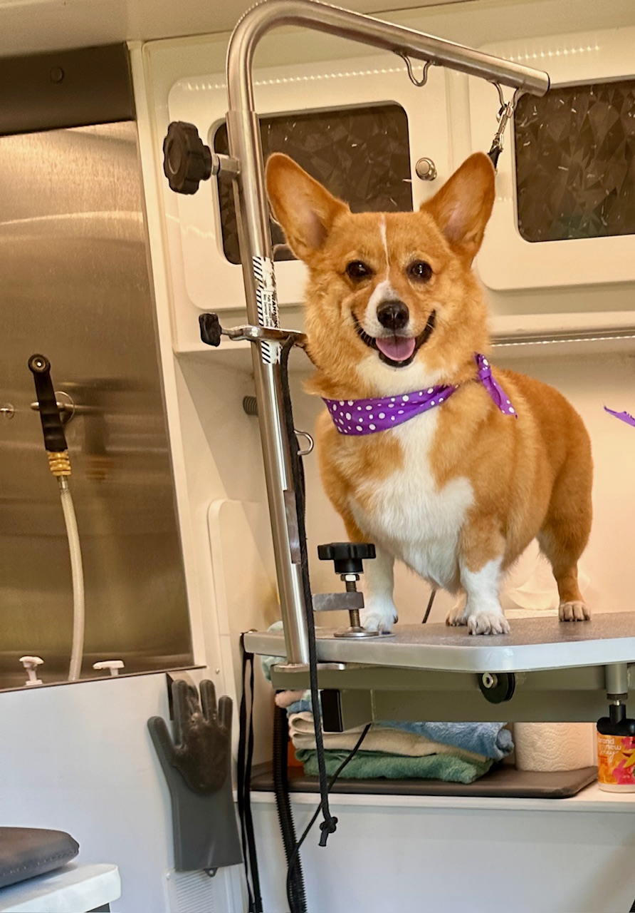
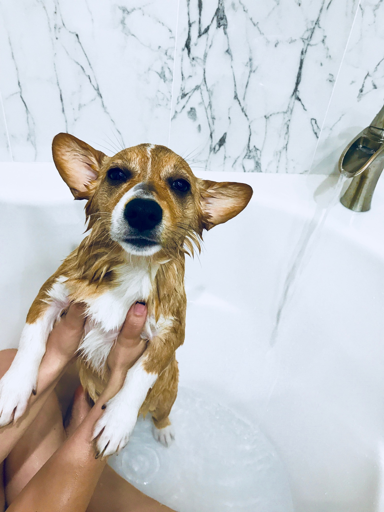
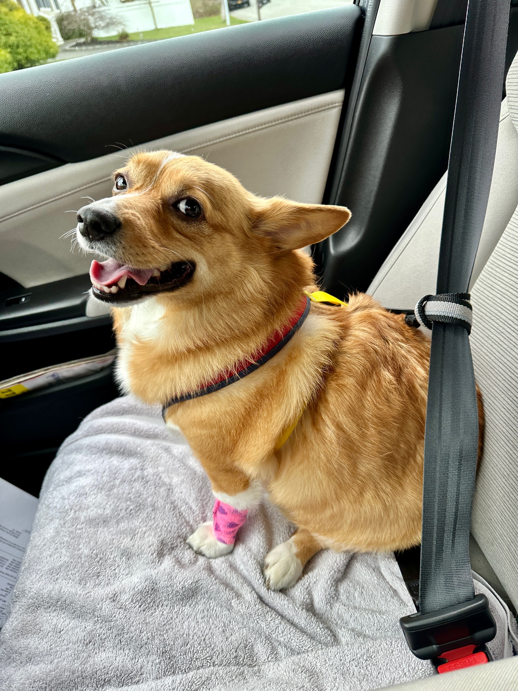

Here are some of Lola's biggest moments!!
Lola walked in looking like a fluffy cloud and walked out looking like a whole new dog. She was suspicious of the blow dryer but warmed up once the treats came out. She came home smelling like lavender and acting extremely fancy.

Nobody told Lola what was coming. One minute she was napping, the next she was in the tub. She gave her family the most betrayed look imaginable the entire time. Full drama. Zero chill.

Lola is not a car ride fan at all. She spent the whole trip with her chin on the armrest staring out the window looking worried. Every bump in the road was treated as a personal attack.

Post groomer Lola was a changed woman. Fluffy, fresh, and walking with a confidence she didnt have before. She zoomied around the house for 5 minutes and then demanded extra treats as compensation for the whole ordeal.

Made with love for Lolabean 💛🐾